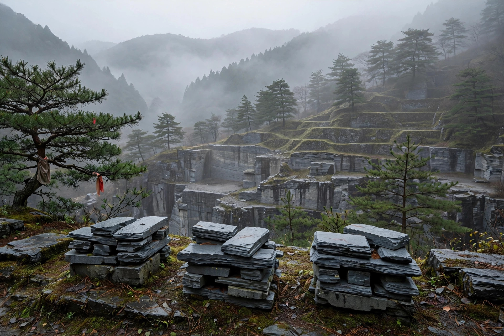

Kyoto's Higashiyama Whetstone Mines: A Guide to Nakayama, Okudo and Shoubudani

Nakayama is known for hard finishing stones, Okudo for suita, and Shoubudani for comparatively accessible stones — but an origin name is only ever a guide. Many of the famous mines are said to be closed, and what circulates today is mostly existing stock. What matters is choosing by each individual stone's hardness and by whether there is a record of it having been sharpened and tested, not by the mine's name.
Why Kyoto became the centre of natural whetstones
In the mountains running from Higashiyama to Kitayama in Kyoto, there are fine-grained strata suited to finishing stones, and finishing natural whetstones called "awasedo" have been mined there since long ago. Tied to the culture of blades, the name of each mountain came to be treated like a brand name for its stone — that is the great characteristic of Kyoto's whetstone mines. However, even within the same mountain, a stone's character changes with where and from which layer it was dug. Please read the characteristics below strictly as generally known tendencies.
Nakayama, Okudo, Shoubudani — the character of each mine
| Mine | Position (as a guide) | Tendency of the stone (as a guide) |
|---|---|---|
| Nakayama | Known as a famous mine representing Higashiyama | Many hard, fine-grained stones, regarded as suited to final finishing. Also known for coloured stones (iromono) |
| Okudo | Especially famous as a suita-producing area | Many suita stones; said to release slurry readily and to suit a kasumi finish |
| Shoubudani | Known as a mountain in the Kameoka direction | Compared with the famous Higashiyama mines, stones in a comparatively accessible price range are also seen |
Nakayama — hard, and suited to finishing
Nakayama is said to have long been valued as a source of hard, tightly grained finishing stones. A hard stone suits the final finishing that refines an edge finely, but its sharpening speed is slow, and handling one calls for a certain amount of familiarity. Prices also tend to run higher; as a guide, stones exceeding several hundred thousand yen are not uncommon.
Okudo — famous for suita
Okudo means suita. Stones taken from the layer with small holes ("nests") release slurry readily, and seem to have been favoured for the kasumi finish on Japanese knives. However, suita too ranges from soft stones to hard ones, and it would be hasty to conclude "Okudo = soft and easy to sharpen".
Shoubudani — a Kameoka mountain, comparatively accessible
Shoubudani is known as a mountain in the Kameoka direction, not inside Kyoto city. Compared with the famous Higashiyama mines, there are stones that are easier to reach in terms of circulation volume and price, and it is an origin often named as an entry point into natural whetstones. Even so, individual differences exist here too, so checking the hardness remains essential.
Closed mines, and how stock circulates today
Many of the famous mines around Higashiyama are said to have already closed. It is said that most stones on the market today are either cut from rough stone mined in the past, or stock that wholesalers and shops have been holding. In other words, a natural whetstone is not a resource that "comes out if you dig"; it is a material that draws closer to its end as stock runs down. The better the layer a stone comes from, the more limited its circulation, and the more easily its price rises — that is the current position, as a guide.
Points to note, so you do not choose by origin name alone
- The layer matters more than the mountain: even from the same origin, which layer the stone came from and how hard it is influence the feel of sharpening more than the mountain's name.
- A stamp is not absolute: stamps and labels can also be attached in the course of distribution, and do not by themselves guarantee quality.
- Look at test records: a stone for which the feel of actually sharpening a blade, and how its slurry behaves, are recorded tends to fail less often.
- Prioritise your use and the hardness: more than an overly hard stone from a famous origin, a stone of no name whose hardness suits your use will more readily give a better result.
An origin name is useful as an entry point for getting to know a stone. But the final judgement should be passed not on the signboard of the origin, but on the character of that single stone. That, it could be said, is the basic stance for dealing with Kyoto's whetstone mines.
Where to look next
- Stone database — search stones across origin, layer, hardness and price range. It is currently a preview with sample records, not live inventory.
- Appraised stones — an approach that deals in stones actually sharpened and checked, rather than relying on an origin name.
- Enquiries — if there is a stone from an origin you are interested in, write to us at naoren.38@gmail.com, or use the contact form.
Frequently asked questions
- Of Nakayama, Okudo and Shoubudani, which is suited to beginners?
- Generally, it seems many people start by considering Shoubudani, which is said to be comparatively accessible. However, an individual stone's hardness and size, and whether there is a record of it having actually been sharpened, influence the result more than the origin name. For a first stone, the guide is to choose not by origin, but by whether the hardness suits your use.
- Are Kyoto's whetstone mines no longer being mined?
- Many of the famous mines around Higashiyama are said to have closed, and it is said that the stones circulating on the market today are mainly rough stone mined in the past and existing stock. New supply is therefore limited, and the current position, as a guide, is that the better a stone is, the less of it tends to circulate.
- If an origin name is written on a stone, can I take it to be genuine?
- Judging by the origin name alone is not recommended. Stamps and labels can be attached later, and even under the same origin name, the quality of stones varies widely. The guide is to check whether the seller has records of actually sharpening and testing stones, and whether there are explanations of layer and hardness.
- Why is Okudo suita so popular?
- Okudo is known as an origin of suita, and it seems its stones have been supported by people who favour finishing Japanese knives, because many of them are said to release slurry readily and to suit a kasumi finish. However, suita too has a range of hardness, and checking each individual stone remains essential.